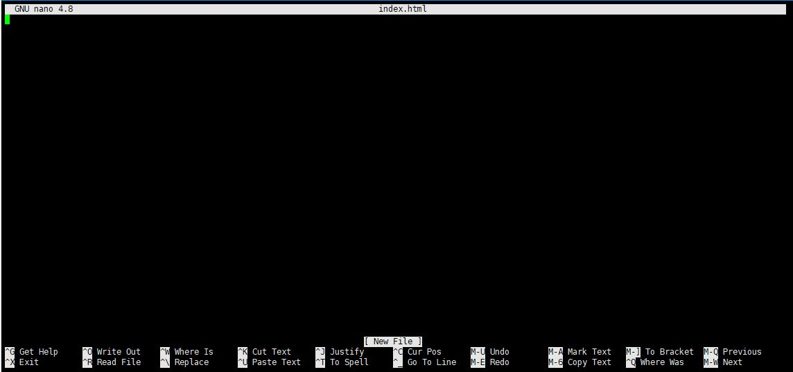
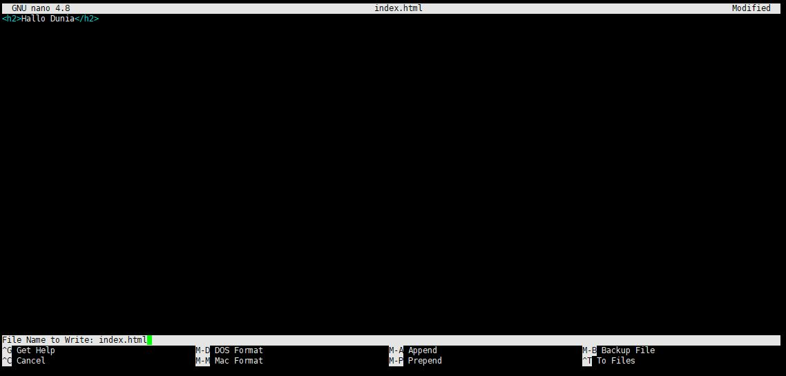
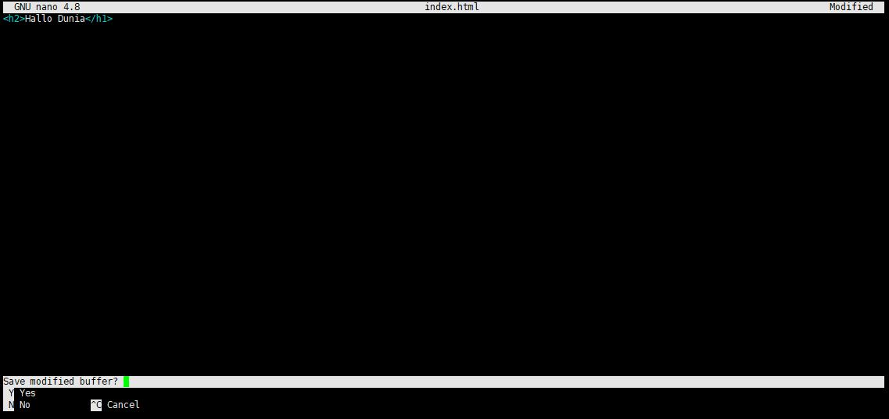

Creating, Viewing And Editing Files
Creating Files
Di Linux ubuntu untuk membuat file bisa mengunakan banyak cara di antaranya menggunakan command vim, vi atau command line nano, atau touch, contoh di sini menggunakan nano
perintah nano adalah untuk membuat file tetapi sekalian mengisi data file tersebut
contoh penggunaan command nano :
Tekan Enter, maka akan disajikan form untuk mengisi data pada file index.html, contoh seperti berikut:
Silahkan isi data file index.html tersebut, dengan cara di ketik manual
Jika sudah dan file akan di simpan, tekan pada keyboard ctrl+O kemudian tekan enter pada keyboard
Jika tidak akan melakukan perubahan pada file , tekan ctrl+X, kemudian pilih no , dan tekan enter
Viewing Files
5 perintah sederhana untuk menampilkan file atau viewing file
1. cat
command cat ini hanya untuk menampilkan conten yang ada di dalam file
2. nl
command nl ini hampir sama dengan ommand cat , hanya kalau menggunakan nl nomor baris akan ikut tampil
3. less
command less untuk menampilkan file pada satu waktu, dan untuk keluar dari view file , tekan q kemudian enter
4. head
command head untuk menampilkan file tetapi hanya 10 baris awal saja yang akan tampil.
5. tail
command tail untuk menampilkan file tetapi hanya 10 baris akhir saja yang akan tampil.
Editing File
Editing file dengan command vi